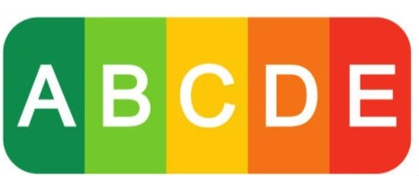

Sensibilisation au Nutri-score
Description
Nous étions deux membres d’une petite association sensible à l'accès libre aux données et souhaitant informer le consommateur sur le Nutri-score. Nous avons tout d’abord extrait les données correspondante à notre analyse. Nous étions sur les produits notés ‘biscuits and cakes’ provenant des Etats-Unis. Puis nous avons exploré et nettoyé notre base, car elle présentait de nombreuses erreurs de saisie. Après,nous avons produit une analyse approfondie à l’aide de graphiques sur le Nutri-score. Enfin, nous avons fini par définir les contraintes et les risques de notre projet.
Organisation
Nous avons fonctionné à deux tout le long pendant les séances de cours.
Compétences acquises
Nous avons acquis des compétences supplémentaires sur l'étude de donner et la rédaction d'un rapport. De plus, nous avons appris à poser les contraintes et les risques.
Acces au projet
Conclusion
Ce projet nous a permis de réaliser une étude complète à partir d’une base de données que nous avons exporter grâce à l’utilisation de SQL. Cette réalisation nous a formé sur l’exploitation des données, la rédaction d’une étude sur RStudio allant de la démonstration jusqu’à la justification et nous a appris l'analyse du projet.